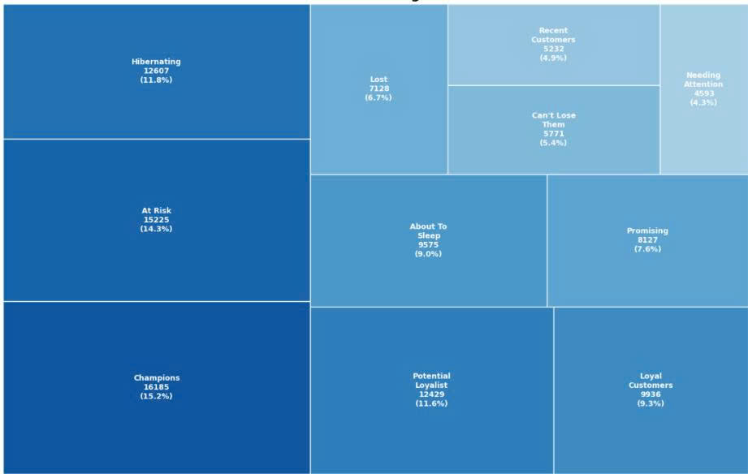
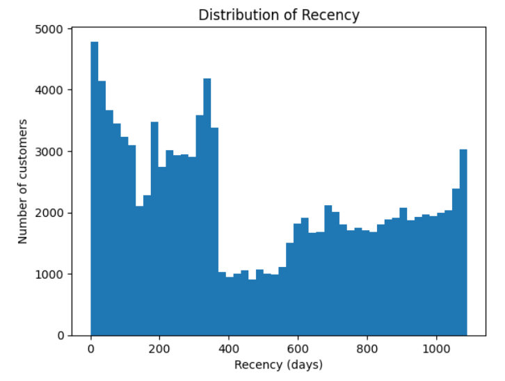
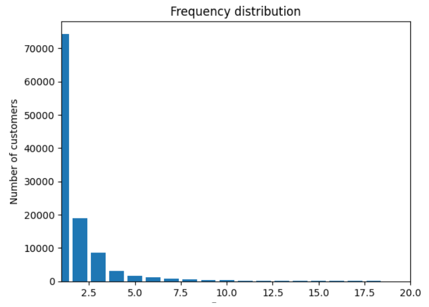
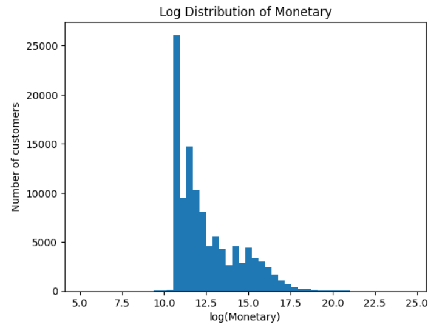
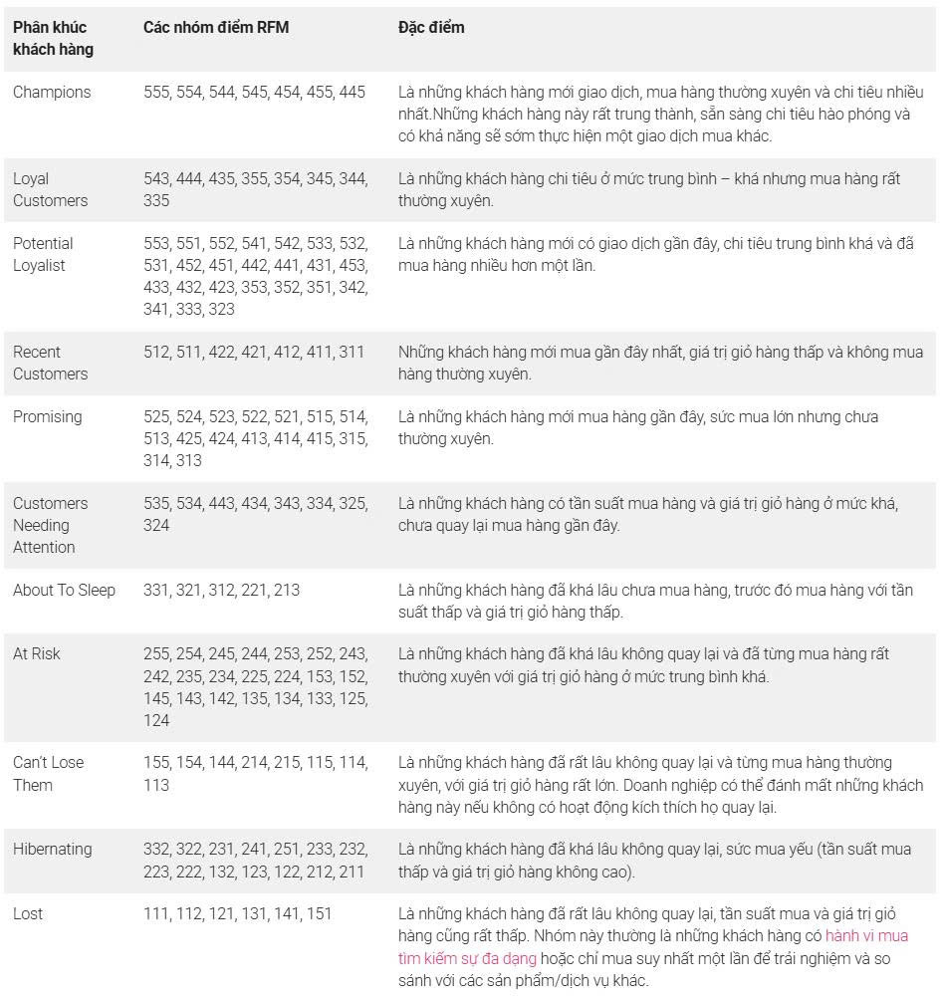
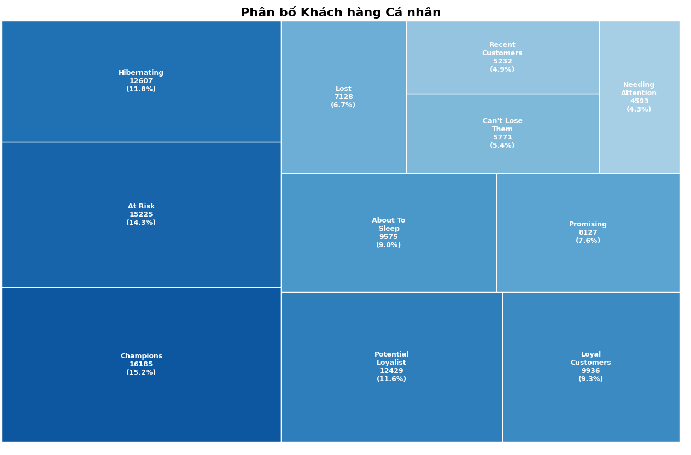
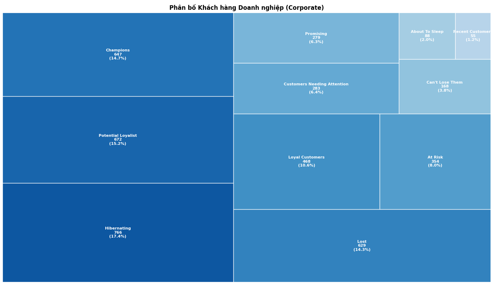
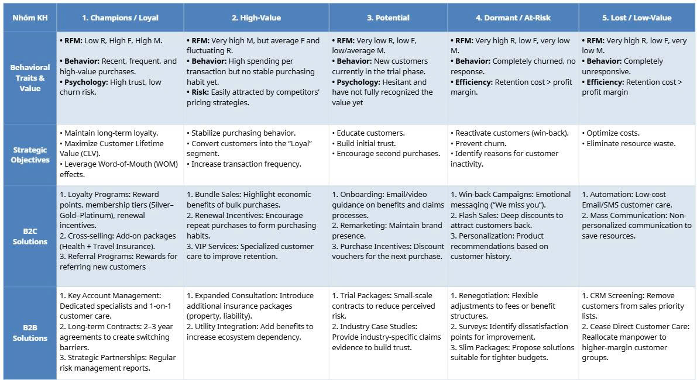

RFM and K-means
for Customer Segmentation
Utilizing RFM analysis and the K-means algorithm, I successfully categorized 111,214 customers of VietinBank Insurance Hanoi into 11 strategic RFM segments and 5 distinct behavioral clusters, tailored for individual and institutional clients.

1. Overview of the RFM Model
The RFM model (Recency – Frequency – Monetary) is one of the most common and effective methods used in customer data analysis, particularly in the finance, insurance, and retail industries. This model is based on the assumption that customers’ past purchasing behavior serves as an important foundation for predicting their future behavior.
The three main indicators of the RFM model include:
● Recency (R): How recently a customer made their last transaction;
● Frequency (F): How often a customer makes transactions within a given period of time;
● Monetary (M): The total revenue value that a customer generates for the business.
By quantifying these three indicators, businesses can segment customers, identify high-value customer groups as well as customers who are at risk of churning, thereby developing appropriate customer care and marketing strategies.
2. Current CRM Situation at VBI Hanoi

Distribution Chart of the Recency Variable
The dispersion and statistical characteristics mentioned above are clearly illustrated through the distribution chart of the Recency variable. The chart demonstrates a distinctive multimodal distribution structure, reflecting the strong segmentation in the behavior of 111,214 customers. Specifically:
● Density peak in the low-value range (0–100 days): This represents the group of “active” customers, corresponding to the minimum values in the dataset. The high concentration of density in this range indicates that VBI Hanoi still maintains a loyal and stable customer base.
● The presence of secondary peaks (around 350 days and above 1,000 days): The peak near the one-year mark (closely associated with the median value of 366 days) indicates the existence of customers who purchase on an annual cycle or customers who are on the verge of churning. Meanwhile, the smaller peak at the far end of the chart confirms the presence of a long-term “dormant” customer group, as reflected by the maximum value of 1,090 days.
 Distribution Chart of the Frequency Variable
For the Frequency metric, the statistical results indicate that the mean value is 1.95 transactions, while the median value is 1 transaction. Notably, 75% of customers made no more than 2 transactions, suggesting that the majority of customers purchase only a limited number of times. However, the maximum Frequency value reaches 1,083 transactions, reflecting the presence of a customer segment with exceptionally high transaction frequency.
This indicates that the Frequency distribution is highly right-skewed, where most customers exhibit low purchasing frequency, while a small proportion demonstrates a very high level of customer loyalty. This pattern is clearly illustrated in the distribution chart of the Frequency variable.

Distribution Chart of the Monetary Variable
The Monetary metric has a median value of VND 150,000, while the mean value reaches VND 5,240,698 and the maximum value exceeds VND 46 billion. The substantial gap between the mean and median indicates that the Monetary distribution is heavily influenced by a small number of customers with exceptionally high spending levels. This suggests that the company’s revenue is not evenly distributed across customers but is instead concentrated within a relatively small segment of high-value customers.
Based on the distribution chart of the Monetary variable, the majority of customers are concentrated in the low-spending segment, while a small number of “VIP” customers generate extremely large transaction values, resulting in a long right tail in the distribution. The significant disparity between regular customers and high-spending customers clearly reflects the Pareto principle in business.
→ Overall, the three RFM indicators reveal that most customers exhibit low transaction frequency, long inactivity periods, and relatively low spending levels, while the majority of revenue is generated by a small group of loyal and high-value customers. This reflects a high customer churn characteristic, relatively unstable customer loyalty, and a revenue structure that is heavily dependent on VIP customers. Therefore, the company should place greater emphasis on customer retention strategies, develop customer care programs, and enhance Customer Lifetime Value (CLV) in order to minimize business risks and improve long-term business performance.
3. RFM Analysis
3.1. RFM Scoring Using the Quintiles Method
To facilitate customer comparison and segmentation, the R, F, and M metrics were standardized into a scoring scale from 1 to 5 using the Quintiles method, in which the customer dataset is divided into five groups of approximately equal size. Specifically:
● For Recency, customers with lower values (more recent transactions) receive higher scores;
● For Frequency and Monetary, customers with higher values receive higher scores.
Descriptive Statistics After Scoring Using the Quintiles Method 
After applying the Quintiles-based scoring technique, the RFM Score dataset exhibited a balanced distribution, with mean values approximately equal to 3.0 and a stable standard deviation of 1.41 across all three variables: Rscore, Fscore, and Mscore. Standardizing these metrics onto a unified scale from 1 to 5 not only eliminates differences in measurement units but also provides an optimal foundation for implementing quantitative clustering algorithms, thereby ensuring objectivity in identifying customer segments.
3.2. Customer Segment Labeling Based on RFM Scores
With 50 possible combinations generated after assigning RFM scores to each customer, these can be consolidated into 11 customer segments with similar characteristics, as presented in the table below.

Customer Segmentation Table Using the RFM Model (Source: Tomorrow Marketing)
3.3. Analysis of Model Results

Treemap of Individual Customers

Treemap of Corporate Customers
Based on the treemap chart and the customer segmentation table, a highly diverse picture of customer behavior at VBI Hanoi can be observed. The customer portfolio is divided into 11 distinct segments across both individual and corporate customer groups. High-value segments (such as Champions and Potential Loyalists) account for a significant proportion in both customer categories. However, the company also faces considerable pressure from customer groups that are at risk of churning. Specifically:
● Champions Segment:
Regarding individual customers, the 'Champions' group consists of 16,185 customers, accounting for 15.2% and making it the largest segment within this category. An average Recency of just 122 days indicates that these customers have maintained transactions quite recently. With an average Frequency of 6 transactions and a Monetary value of approximately 6.28 million VND, this group represents a loyal customer base with stable premium contributions. They typically purchase more than one insurance policy per year, although the individual contract values are not particularly large. This aligns with the characteristics of personal health, motor, or private home insurance, where policies often have lower values and are renewed periodically.
In contrast, there are only 647 corporate customers in the 'Champions' group (14.7%), a significantly smaller headcount compared to individuals. However, the average Monetary value for this group reaches 31.59 million VND, several times higher than that of personal clients. This is because corporate transactions often involve high-value engineering and property insurance, alongside group health insurance for employees,.... Notably, the average Frequency of 56 transactions highlights long-term, collaborative relationships with frequent business activity. This reflects the strategic importance of the 'Champions' group in the corporate segment, where each client delivers substantial revenue despite their limited number.
● Loyal Customers and Potential Loyalists Segments:
Among individual customers, the Loyal Customers segment consists of 9,936 customers (9.3%), with an average Recency of 310 days, an average Frequency of 4 transactions, and an average Monetary value of approximately VND 4.57 million. This segment represents customers who have established relatively stable relationships with the company but have not yet reached the highest transaction levels.
At the same time, the Potential Loyalists segment accounts for 12,429 customers (11.6%), with a better Recency value (198 days), while the average Frequency and Monetary values remain relatively low (2 transactions and approximately VND 108,670, respectively). This indicates that the segment has strong growth potential if customers are encouraged to increase their purchasing frequency or expand their insurance coverage.
For corporate customers, these two segments play a particularly important role. The Potential Loyalists segment includes 672 customers (15.2%), making it the second-largest segment within the corporate customer structure, with an average Recency of 229 days, Frequency of 3 transactions, and Monetary value of approximately VND 1.05 million. Meanwhile, the Loyal Customers segment consists of 468 customers (10.6%), but its average Monetary value reaches as high as VND 27.14 million.
This demonstrates that the transition from Potential Loyalists to Loyal Customers in the corporate segment can generate substantial revenue growth, highlighting the importance of customer care strategies and long-term relationship management initiatives.
● At Risk và Can’t Lose Them Segments:
The At Risk segment among individual customers accounts for a substantial proportion, with 15,225 customers (14.3%). The average Recency reaches 837 days, indicating that these customers have not renewed their policies for a long period of time. Although the average Frequency and Monetary values are relatively low (3 transactions and VND 1.59 million, respectively), the large size of this segment makes it a significant concern in CRM management, as even a small reactivation rate could generate considerable revenue improvement.
In addition, the Can’t Lose Them segment has an average Recency of 916 days, second only to the Lost segment. However, this group demonstrates relatively strong purchasing power, with an average Monetary value of VND 2.96 million and an average Frequency of 2 transactions. Although this segment represents only 5.40% of the customer base (5,771 customers), it holds significant recovery potential. If the company implements effective retention strategies for these two segments, they could potentially be converted into Loyal Customers.
Among corporate customers, the At Risk segment consists of only 354 customers (8.0%), yet its average Monetary value reaches VND 71.64 million, the highest among all customer segments. This indicates that despite the relatively small customer base, this is a strategically critical risk segment, as losing even a single customer could result in substantial revenue loss.Similarly, the Can’t Lose Them segment within the corporate customer group includes only 168 customers (3.8%), but the average Monetary value is approximately VND 25.34 million, highlighting the need for high-priority customer retention policies for this segment.
● Hibernating, Lost và About To Sleep Segments:
Among individual customers, the Hibernating segment consists of 12,607 customers (11.8%), with an average Recency of 719 days and a Frequency of only 1 transaction, indicating that these customers have almost completely stopped interacting with the company.The Lost segment includes 7,128 customers (6.7%), characterized by a very high Recency value (965 days) and a very low Monetary value (approximately VND 59,941), reflecting customers who have nearly completely churned.
Meanwhile, the About To Sleep segment accounts for 9,575 customers (9.0%). This represents a transitional group that faces a high risk of becoming Hibernating or Lost if timely intervention measures are not implemented. Within the corporate customer segment, Hibernating is the largest group, with 766 customers (17.4%), followed by the Lost segment with 629 customers (14.3%). Although the Monetary values of these segments are lower compared to the Champions segment, they remain significantly higher than those of individual customers. This suggests that even dormant or churned corporate customers still possess considerable contract value, making them suitable targets for selective reactivation strategies.
● Promising và Recent Customers Segment:
Among individual customers, the Promising segment consists of 8,127 customers (7.6%), with an average Recency of 214 days and an average Monetary value of approximately VND 1.78 million, indicating that these customers are beginning to show signs of growth potential.The Recent Customers segment includes 5,232 customers (4.9%), with an average Recency of 218 days, while both Frequency and Monetary values remain relatively low. This reflects the typical characteristics of customers who have only recently entered the insurance market.
Within the corporate customer segment, these two groups account for only a very small proportion: the Promising segment includes just 279 customers (6.3%), while the Recent Customers segment consists of only 55 customers (1.2%). This reflects the reality that the number of newly acquired corporate customers remains limited due to higher entry barriers and more complex decision-making processes compared to individual customers.
→ Overall Comparison Between Individual and Corporate Customers
Overall, the comparison indicates that individual customers account for a large customer base, exhibit more dispersed behavioral patterns, and generate relatively small contract values, whereas corporate customers are fewer in number but contribute significantly higher Monetary values.The Champions segment among individual customers stands out in terms of customer volume, while in the corporate segment, it is particularly prominent in terms of customer value. In contrast, the At Risk and Can’t Lose Them segments within the corporate portfolio, although smaller in size, carry substantially greater strategic importance compared to their counterparts in the individual customer segment.
These differences stem from the inherent characteristics of the insurance industry: individual insurance products are typically short-term, lower in value, and more easily replaceable, whereas corporate insurance products tend to involve long-term relationships, larger contract values, and higher switching costs. Therefore, the RFM analysis results highlight the necessity of developing differentiated CRM customer management strategies for each customer segment, rather than applying a uniform approach across all customer groups.
3.4. Khuyến nghị giải pháp
Based on the RFM analysis results, it can be observed that VBI Hanoi’s customer base is divided into multiple segments with distinct behaviors and value levels, ranging from loyal and high-value customer groups such as Champions and Loyal Customers to segments with a high risk of churn, such as At Risk and Hibernating. This indicates that the company should not apply a single marketing strategy to all customers, but instead implement differentiated strategies for each segment in order to optimize resource allocation efficiency.
The RFM model serves as a foundational tool that enables the company to transition from mass marketing approaches to personalized marketing and data-driven customer relationship management. Rather than focusing solely on acquiring new customers, the company should place greater emphasis on retaining, developing, and maximizing the lifetime value of existing customers, particularly those with high economic value.
On that basis, the proposed solution focuses on developing a data-driven CRM management system, in which each customer segment is assigned different engagement, customer care, and value extraction strategies. The overall objectives of these solutions are to:
(1) Improve customer retention effectiveness,
(2) Maximize Customer Lifetime Value (CLV), and
(3) Optimize marketing and sales costs.
The details are illustrated in the figure below.
